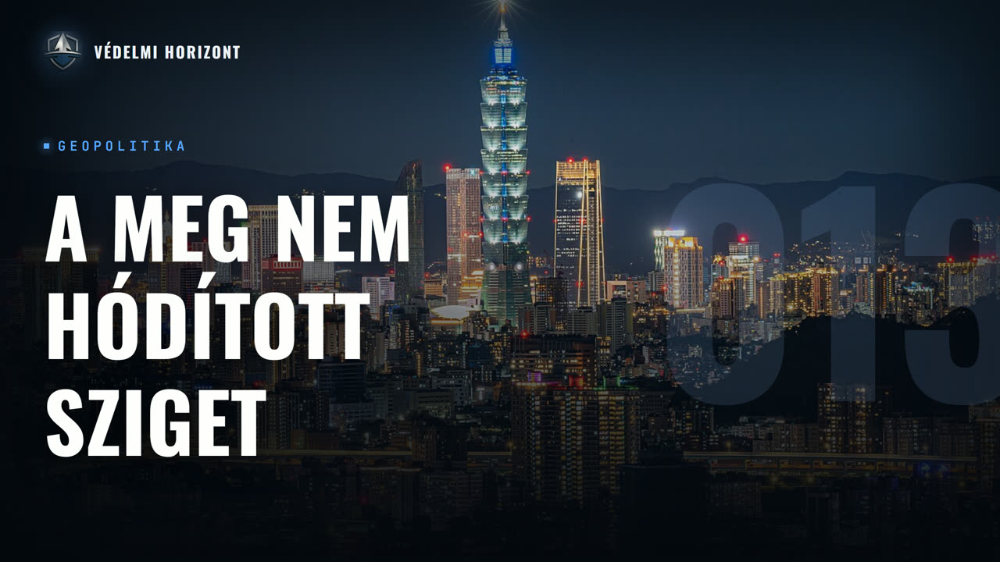

VÉDELMI HORIZONT #13 – Tajvan és Kína: csipek, patthelyzet, blokád

Leírás
Résztvevők: Lázár Domonkos, Pásztor Ákos
Üdvözöljük a Védelmi Horizont kutatóműhely tizenharmadik adásában!
Ezúttal vendég nélkül, Lázár Domonkos és Pásztor Ákos beszélgetnek arról a szigetről, amely a világgazdaság egyik legérzékenyebb töréspontja. Honnan ered a mai Tajvan, és hogyan lett egy csepp alakú szigetből a Kínai Köztársaság? A történelmi ív a portugál „Formosától” a japán gyarmati koron át a kínai polgárháborúig vezet, majd rátérünk a fordulópontra: miért éppen a koreai háború mentette meg Tajvant a kommunista inváziótól, és mit jelentett az „elsüllyeszthetetlen anyahajó” szerep. Innen a gazdaság felé fordulunk: hogyan épült fel a földreformtól az exportvezérelt csodáig a sziget, és miért lett a TSMC és a félvezetőgyártás az egész világ számára megkerülhetetlen? A politikai blokkban a máig rendezetlen jogi helyzetet, az egy Kína elvet és a tajvani demokráciát járjuk körül, végül pedig a kockázatokat: a tengeralatti kábeleket, az energiafüggőséget, az alacsony születési rátát, és azt a nagy kérdést, hogy egy esetleges egyesítés invázió vagy inkább blokád formájában érkezhet.
Leirat beszélőnként
Üdv mindenkinek! Ez itt a Védelmi Horizont, az a podcast, ahol gazdasági, hadipari és biztonságpolitikai szempontok alapján nézünk rá ugyanarra a témára, egyszerre egy asztalnál. A nevem Lázár Domonkos, és most ketten ülünk a mikrofonok mögött, velem szemben Pásztor Ákos. Üdvözlöm a tisztelt hallgatókat! A mai témánk Tajvan lesz, illetve Tajvan és Kína kapcsolata. Ákos, egy kicsit a történelembe, ha be tudnál vezetni minket és a nézőket, azt megköszönném.
Rendben. Szóval elsőként, mikor Tajvanra gondolunk, akkor leginkább csak egy darab sziget, ez a köncsepp alakú sziget, amit az első portugál felfedezők Formosának, az a szép formájúnak kereszteltek el. De ugye ezt gyakorlatilag a hivatalos terminológiája az államnak az Kínai Köztársaság, és ez nem csak ezt a szép formájú szigetet, hanem a tengerszoroson lévő úgynevezett Pescadores vagy Penghu szigeteket, illetve futjien tartomány mellett Matsui és Kinmen szigeteket is magába öleli. Ez azért érdekes, Mert a főszigettel ellentétben ezek a szigetek teljes egészében a szárazföldi Kínával együtt fejlődtek egészen 1949-ig. Amíg a fősziget gyakorlatilag csak a 17. században lett lakott kínaiak által, akkor is úgy, hogy európai gyarmadtartó államok, Legelőször talán a spanyolok, de ők csak nagyon rövid időig, utána a hollandok hoztak be telepes kínaiakat. Fujian az a legközelebbi kínai tartomány, szóval nyilván onnan, szóval Fujian tartományból. És gyakorlatilag a helyi őslakosok mellett hamar többsége be szereztek a nyugati alföldi területeken. A keleti hegyvidéki területeket azonban nem nagyon népesítették be, Mert nem akartak itt mindenféle ilyen fejvadász, meg ilyen bérgyilkos törzsekkel közösködni, mert gyakorlatilag nem látták értelmét, mert nem nagyon volt megművelhető föld. Szóval gyakorlatilag mikor végbe ment a dinasztiaváltás, 1644-től 1883-ig a Mingről a Qing dinasztiára cserélődött le a kínai Kínai uralkodóház. Akkor ezt a szigetvilágot, mert akkor is együtt volt Tajvan és ezek a környező Penghu szigetek stb. Ezt egy Zheng He nevű kalózadmirális szerezte meg a hollandoktól és gyakorlatilag lett egy ilyen Jack Sparrow-nak a saját birodalma. Ez a zsenke volt? Zheng He volt, és gyakorlatilag Zheng He-nek volt egyetlen nagy hibája, hogy ő az előző dinasztiához, a Ming-ekhez volt lojális. És gyakorlatilag, mint egy ilyen utolsó Ming bázisok egyike, nem tudom, hogy mennyire lett volna reális, hogy az új Qing dinasztia, ami egyébként Manchu, Manchu egy népcsoport, Manchu ugye róluk kapta a nevét, Ennyire lehetett volna megvesztegetni, de a Qing-ek itt példát akartak statuálni, és gyakorlatilag egy Shi Lang nevű Manchu admirális, Qing admirális volt az, aki bevonult Tajvan szigetére, és elfoglalta azt, és tette a Qing birodalom részévé. Utána gyakorlatilag a következő években vita folyta arról, hogy akkor itt most Mi történjen a szigettel? Volt ilyen, aki azt mondta, hogy hagyják ott a francba, mert hogy igazából ennek úgy nincs értelme, hogy nagyon kevés szárazföld, azt a 150-200, vagy a Debreceni Kínait meg visszaviszik, futj ilyen rossz csá, így is vannak már ott 200 ezre, vagy azt hiszem ilyen 200 milliókor volt már akkor is Kína népessége, szóval az a 200 ezer ember csak elfér valahol ott a déli országrészben. És azt meg visszaadják az őslakosoknak, és igazából hasta la vista. De végül is Sölang admirális, aki akkor egy nagyon kitüntetett valaki volt, meggyőzte a császárt, hogy akkor uram királyom, uram császárom, ha már meghódítottuk, legalább én is, legalábbis én meghódítottam, akkor ahhoz szépen kérem, hogy ha adjuk már meg ezt a szigetet saját magunknak, mert ez így jó lenne, meg azért mégiscsak úgyna. Aztán végül is Sri Lanka admirális meggyőzte a császárt és a következő értékekben szervesen együtt fejlődött Tajvan. Legalábbis annak a szárazföld részében a hegyvidék itt még a 19. század közepéig nem nagyon foglalták el a kínaiak, nem nagyon fedezték föl, mert ahogy mondtam nem nagyon lett volna igazán értelme. Aztán Gyakorlatilag ugye mindenki tisztában van az ópiumháborúkkal, illetve Kínában az 1840-estől az 1940-50-es évekig tartotta meg a láztatás évszázada, amikor is abszolút kiszolgáltatottá vált a nyugati imperiaista hatalmakkal, illetve Japánnal szemben az ország. És el is vesztette 1895-ben az első kínai-japán háborút, amelynek során a Liaotong félsziget, ez azt hiszem ma is Liaotong a neve, bár nem tudom, szóval ez a Manchúriának a kis földnyúlványa Kórea közelében. Ezt a Kórea feletti szuzeranitit, amit így magyarul ilyen hűbériségnek vagy fennségjognak tudnám leginkább fordítani, illetve itt csak Tajvan szigetére gondolok, Tajvan szigetét Shimonoszeki békeszerződés értelmében az akkori Qing dinasztia elvesztette. Aztán gyakorlatilag Japán volt az, aki ezeket a hegyvidéki törzseket, amit Kína nem igazán tett, meg még a 19. század végére sem integrálta a szigetbe. Úgy istenigazából a tajvaniak relatíve jól assziminálódtak. A kínai lakosságban azért törtek ki felkelések, közvetlenül a shimonoseki béke megkötése és a tajvani csapatok bevonulása előtt egy független államot, egy úgynevezett tajvani köztársaság vagy valami hasonló, de hogy az etnikailag Kína valamit csinálja, csinálni próbáltak ott Tajpei Hivatalnakok, azt hiszem talán nem is Tajpej volt akkor a főváros, hanem Tajnan. Ugye a Pej az éjszakot jelent, a Nan délt, szóval gyakorlatilag déltaj volt akkor a főváros és nem éjszak-taj. Ezt azt hiszem, nem vagyok ebben sem teljesen biztos, de ez talán közelebb van Kaohsiunghoz és a kelet-kínai tengerhez, semmint hogy a Sziget-északi részé legyen Tajpejjel szemben. Aztán gyakorlatilag ugye ez a államkísérlet, kínai állam, függetlenül kínai államkísérlet megbukott, mert Japán integrálta a császári birodalomba. Aztán végül is, és talán itt jön a nagyon érdekes dolog, hogy végül is 1943-ban, a II. világháború elős közepén a kájrói konferencián állapodott meg Winston Churchill és Franklin Delano Roosevelt, Abban Csang Kaj-sek, akkori kínai elnök generalissimus diktátorról. Gyakorlatilag ilyen sorrendben voltak azt hiszem a titulusai. Tábornak is volt egyébként az öreg. Elnök úr, hogy gyakorlatilag minden területet, amit Japán elcsatolt Kínától, ugye nem csak a 31-37 óta tartó második kínai-japán háborúban, ugye itt Manchúriára gondolkodok elsősorban, meg minden egyebet, amit a szinte teljes kínai partvidéket elfogadott Japán, hanem a Ez volt az első kínai-japán háborúban, és ez akkor már lassan 50 éve elvesztett területét is. Így reaktiválni, reporciózni szerette volna Csang Kaj-sek, így itt a Liaotong félszigetre, illetve Tajvanra kell elsősorban gondolni. Megfordult az emberek fejében a Ryukyu-szigetek, ez a Majokinava területének a meghódítása vagy visszahódítása is. Ugye ezt ekta japán törletként gondoljuk, de az az 1870-es évekig ez egy kínai adófizető önálló állam volt, akkor szerezte meg Japán, de itt igazából a kínai jelenlét mindig is csak formai volt, így végül is ezt elvetették, és Csang Kaj-sek is azt mondta, hogy elég lesz nekünk Tajvant, meg ott a Liaotong félsziget környékét újra reporciózni a birodalomba. Az is egy hosszú utazás, vagy hát nem is utazás, hogy mondjam ezt, Hosszú folyamat lesz gyakorlatilag, mire ez végbe megy. Igen ám, csak ugye ez a kairói konferencia, ez nem egy nemzetközi szerződés se többi volt, hanem ez ilyen készfogásos cselekedet, gyakorlatilag olyan, mint amikor Kelet-Európa sorsáról megegyezett Churchill meg Sztálin a híres moszkvai szalvétás eset által. Ugye, mint ismert Japán elvesztette a második világháborút, hála sok magyarországi születésű tudósnak itt, s ezt most annyira nem részletezem, de szerintem minden hallgatónk tudja, mire gondoltam itt elsősorban. És Csang Kaj-sek, Végül is bevonul Tajvanra, de nagyon vicces volt egyébként, mert a kínaiak gyakorlatilag a leglerongyosodottabb, legszegényebb felszerelésű katonáikat tudták csak mozgósítani, mivel a többi területet is az országba így vissza kellett szerezni egészen Manchúrián át mindent. Ugye itt fegyverszünetet kötöttek a kommunisták és a nacionalisták Egyesült Kínai Front néven még 45 végig, 40 elejig, szóval itt még Ez vegyes elemű dandárok, vegyes elemű hadosztályok voltak teljesen, akik így együtt meneteltek. És gyakorlatilag amerikai hadi hajók rakták át a kínai katonákat Tajvanra, mivel annyira nem volt hadi eszköze a kínaiaknak, mert hogy gyakorlatilag két-három éven keresztül be voltak szorulva a Burmaim meg a tibeti határra. Aztán ugye, ahogy ezt felvezettem, kitört a kínai polgárháború. Amit a kommunisták nyernek meg, egy egyébként számomra kevésbé részletezett dolog miatt, mégpedig amiatt, hogy Manzsúriát az bizony a Szovjetunió szabadítja fel úgymond, lehet, hogy ebben az esetben ténylegesen alkalmazhatjuk a felszabadítás szót, a japán uralom alól, és ez a vidék volt akkor Kína legiparosodottabb, legfejlettebb része, és ez bizony polgárpáború kezdetekor az akkor még ott megszálló szovjet csapatok, A komovistáknak adják oda. Ugye ezért is tudtak Kórhába bevonulni a szovjet csapatok, és ezért lett Észak-Kóra-Észak. A délről érkező többi szövetséges angolszáz csapatok pedig Kóra-déli részre vonultak be, és így lett Dél-Kóra-Dél-Kóra, mert hogy ugye Kóra is 1910 óta hivatalosan japán protektorátus. Lett, ami gyakorlatilag igazából ilyen gyarmati provinciát jelentett, hanem ténylegesen el akarták japánusítani, ugyanahogy Tajvannal megtették, csak ott sokkal durvább van. És ez mai napig nagyon komoly a fenye meg Tokió között nyilvánvalóan, de Széul meg Tokió között is a vitás dolgok. Na de térjünk vissza Kínára. Szóval miután Manzsúriát átjátszották sikeresen a szovjetek a kommunistáknak, Gyakorlatilag mint Késevajon haladtak át a nacionalista állásokon, és a nacionalistáknak a Burma gyakorlatilag ugyanaz, mint 6-7 évvel korábban a burmai határ közelébe, illetve a szigetekre szorultak vissza, és 1949-ben ki kiálltja? Ma hozzátunk a Kínai Népköztársaságot. Ezzel hivatalosan, legalábbis a mostani pekingi narratíva szerint véget ért a megaláztatás évszázada. Ugye Csang Kaj-sek alatt, illetve még most is, mert mostanában a Csang Kaj-seki örökség ideológiai okok miatt nincs nagyon hangoztatva a tajpai kormányzat által, de a tajpai kormányzat ők 1945-öt számolják a megaláztatás évszázadának a végét. Hát ezen a négy éve most szerintem ne vesszünk össze. De nem is ez a lényeg, hanem hogy még folytak a harcok. Hainan sziget, ezt majd beszúrunk ide képet nyilván a hallgatóknak, ez egy ilyen kör alakú sziget a vietnámi partoktól nem messze, relatíve nagy. Ezt csak 1951-ben foglalja, vagy nem, bocsánat, 1950-ben foglalja el a kínai népköztársaság. Tibetet pedig 1951-ben, de azt relatíve gyorsan. A hajnani hadművelet az relatíve sok időbe telt, és itt most érdemes a dátumokra is figyelni, ugyanis Hajnan szigetét 1950 májusában hódítja meg. A Kínai Népköztársaság Csang Kaj-sekéktől. És szinte biztos, hogy erre a sorsra jutott volna Tajvan, illetve az azóta is a tájpei kormányzat kezén lévő Pescadores, Qimen és Macu szigetek. És akkor még talán több is volt, mert az 50-es, 60-as években azért itt a Fujian tartománymenti partiszigetekből foglaltak vissza a kínaiak. Szóval megindult volna a nagy invázió, nagy kommunista invázió Tajvan szigetének az elfoglalására, felszabadítására. De, és most jön a lényeg, Kim Il-Sung, Fenyán-nak a akkor már hivatalosan is északúr vagy kórai népi demokratikus leszeg elnöke, megtámadta Dél-Koreát, és relatíve jól is haladt, és Douglas MacArthur, Elnöki tanácsadó, azt hiszem akkor már Harry S. Truman, vagy még Harry S. Truman volt az elnök, mert Eisenhower talán 52-53-tól jött, ha jól tudom. Szóval ő fejezte már be a korai háborút, de Truman kezdte el, így van. Kidolgozták azt a taktikát gyakorlatilag. hogy minden hídfűállást kőkeményen kell védeni, és gyakorlatilag ENSZ csapatokat küldtek délkóra a megsegítésére. Ugyanis ekkor a győztesek jogán nem Peking, hanem Tajvan volt az ENSZ-BT állandó tagja egészen 1971-ig, úgyhogy az ő szavazatuk is kellett. A Szovjetunió ekkor ki lett cselezve egy diplomáciai csellel gyakorlatilag. A cserébe viszont rengeteg önkéntes küldött a kórai háborúba, hogy nyilván Mao Tse-tung is, és emiatt nem csak elcsalták a katonákat egy esetelés Tajvan invációval, hanem pont emiatt, a szavazat miatt, meg nyilván geopolitikai realitásból fakadó okok miatt is, Tajvan szigete gyakorlatilag egy elsügyesztetetlen anyahajó, ahogy MacArthur fogalmazott, és emiatt a Formosa Resolution-t vezette be az amerikai kormányzat, úgyhogy Tajvant minden áron meg kell védeni és fenn kell tartani, és gyakorlatilag fenn is tartja. Kisebb megszakításokkal nyilván, Nixon-i fordulat, amiről mindjárt lesz szó, De a mai napig fenntartja a Tajvan feletti szoros együttműködési pár, azért relatíve jelentős legalábbis gazdasági kontrollt próbálja fenntartani az USA a mai napig. De itt akkor az 50-es évek hajnalán ez nyilván sokkal szorosabb volt, mint napjainkban. És gyakorlatilag nyugodtan mondhatjuk, hogy Kim Ir-szennek ez az elhamarkodott döntése volt az, ami miatt Tajvan, illetve a kínai köztársaság a mai napig a mai formájában létezik. Úgy ahogy, mert szinte biztos, hogy Hainan szigetéhez hasonlóan Mao Tse-tung, illetve Lin Biao hadsereg főparancsnok gyakorlatilag szinte biztos, hogy elfogadták volna. Teljes Tajvan környékét és a szigetvilágával együtt. Aztán gyakorlatilag beálltak a frontvonalak, voltak különböző próbálkozások, 50-es, 60-as években, 58-ben volt a legkomolyabb, akkor több szigetet is sikerült elfoglalni a Kínai Köztársaságtól Pekingnek. De igazából a 70-es évek elejéig nem nagyon történt változás. Aztán 71-ben volt az, amikor az ENSZ-ből kiszavazták Tajvant. Az ENSZ-BT-ből ez egy általános sok volt, akkor gondolom a tajvani lakosságnak. Bekerült a pekingi kormányzat, aztán pedig 1972-ben ugye az ismert pingpong diplomácia, amikor a szovjet unió elszigetelési céljából Nixon és Kissinger látogatást tett Mao Zedongnál. És itt fogalmazódott meg az egy kína elfnek a Nemzetközi vététele, vagyis hogy a lehető legtöbb ország, az a Peking kormányzatot ismeri el Tajvanival. Szemegyék, hogy mai napig vannak országok, amik Tajvant ismerik el hivatalos államnak, nem pedig Pekinget. Legismertebb ezek közül Guatemala, illetve a Vatikán, illetve talán Paraguay, most ezeket tudom. De ennek ellenére hiába a diplomáció eszeketeltség fokozódott, illetve fokozódik is a világban, de Tajvan föntartotta a presztízsét, nagyon erős középosztály jelentse a mai napig, illetve a jobboldali diktatúra ott igazán csak a 90-es években ért véget. Akkor lett demokratikus Tajvan. Egy bizonyos Lee Teng-hui, akit Mr. Democracy-nak szoktak hívni, Kuomintang reforma rágához tartozott, az akkori kormánypárt. Akik mai napig a legnagyobb ellenzéki párt, illetve a parlamentben nekik van a legnagyobb frakciójuk. Alatta lett bevezetve a több pártrendszer és 2000-ben pedig Chen Shui-bian volt az első nem Kuomintang elnöke a kínai köztársaságnak, akik bizony ők Tajvan úgy függetlenségét akarják, hogy ők Tajvan identitásúak, nem pedig kínaiak és hogy a Módusz Hüvendit meg kell találni a Pekingkel kapcsolatban, de hogy ők mindenképpen akarnak szakadni Pekingtől és független Tajvant akarnak. És a többi pedig már aktuál politika. És át is adom Domonkosnak a szót.
Köszönjük. Én egy kicsit még kitérnék ennek a tajvani történetnek a gazdasági oldalára, és visszatérnék egészen a japán gyarmati léthez, ami, ha bár nyilván árnyoldalak, Árnyalai is voltak, de összességében azt mondhatjuk, hogy megalapozta a modern Tajvan gazdaságát egy modern mezőgazdasággal, egy relatíve fejlett iparral, az infrastruktúra és az urbanizáció elősegítésével. És egy erős oktatással, majd pedig az 50-es években a polgárháború utáni nehéz időszakban egy földreform volt az első fontos tette a Kuomintangnak, amivel megalapozta a hatalmas fejlődését a 20. század második felében Tajvannak. Majd pedig, miután ez a földreform megtörtént, elindult az iparfejlesztés is. Itt mondjuk segített az is, hogy Japán kormányzati és magánvagyont is sikerült elkobozni a Kuomintangnak. Majd pedig négy éves tervek jöttek és átfogó iparfejlesztés, amit egyébként az Egyesült Államok aktívan segített. Részben tanácsadókkal, részben pedig egy segélyprogrammal is. Összesen 1465 millió USA dollárral támogatták meg Tajvant. És ez beleillett az akkori Egyesült Államok külpolitikába, mert hát mindenütt megpróbálták megállítani, illetve ugye a Rolling Back jegyében később visszaszorítani a kommunizmust, aminek egy fontos államása volt Japán mellett Tajvan maga is. Elindult egy iparfejlesztés és az importhelyettesítő gazdaságstratégiát alkalmazták eleinte, majd pedig az 1960-as, 70-es évektől egyre inkább fokozatosan exportorientált gazdaságstratégiára sikerült áttérni, tehát gyakorlatilag A gazdaság átalakításának egy mintapéldáját látjuk itt Tajvannál, amit egyébként szerintem érdemes mélyebben is vizsgálni, ha valakit érdekel ez a téma. A részleteken túl egyébként azt szeretném még kiemelni ezzel kapcsolatban, hogy a Tehát végeredményben a legnagyobb eredmény tényleg az volt ebben az ipari és gazdasági átalakulásban, hogy 40 éven keresztül a világ leggyorsabb GNP, azaz bruttó nemzeti termék növekedését tudták elérni, mégpedig az azt jelentette, hogy 8,8% minden egyes évre, ha levetítjük. Ami azt eredményezte, hogy a világ top 10-15 országába került ezzel gazdasági tekintetben Tajvan. És innentől kezdve nem meglepő, hogy jelenleg hogy áll. Kiemelném az oktatás szerepét, mert Tajvanon az egyik legmagasabb a felső oktatásban részt vettek aránya, 60 százalék, ami kontextusként a világátlag az 43. Tehát ha megnézzük például Japánban csak 57 százalék, Dél-Korában 56, az Egyesült Királyságban 54, Ausztráliában 53, de ezen a területen látható még Svédország, az USA, Hollandia, Franciaország, tehát elég felett országokat sikerült maguk mögött hagyni az oktatásban, és ez Nyilván nem csak emiatt, de azt hiszem ez is egy fontos szerepe. Ez is egy fontos szerepet játszik abban, hogy az utóbbi 80-as évek óta folyamatosan 5% környéki real GDP növekedést tudtak elkönyvelni a tajvaniak. És ha megnézünk itt egy ábrát, amit majd a nézőknek is szeretnénk megmutatni. Itt az látható, hogy a GDP per fő növekedés az hogy alakult a 80-as évektől egészen napjainkig, és Kínát szépen lassan lehagyva Tajvan kezd közeledni az Egyesült Államokhoz. És ami még érdekesebb, hogyha ezt PPP alapon, tehát purchasing power parity-n, Nézzük, akkor pont idénre utól is érte és meg is haladja Tajvan az Egyesült Államokat. Tehát egy kifejezetten fejlett területről beszélünk. Ennek fontos eleme az is, hogy az inflációt a 80-es évek közepe óta 5%-ot nem haladta meg az éves infláció, tehát egy nagyon stabil gazdaságról beszélhetünk. Ehhez hozzájárult az is, hogy Őőm, a... Az államadóságot sikerült 40% alatt tartani, tehát történelmében nem ment 40% fölé, mióta ezt az adatot felveszik a 90-es évek közöpe óta. Illetve még azt is szerintem érdemes megemlíteni, hogy ezt az adósság csökkentést és kordelmantartást nyilván úgy tudták elérni, hogy folyamatosan a költségvetés pozitívban jön ki. Nagyjából úgy átlagosan 10% környékén az utóbbi néhány évtizedben. Tehát egy nagyon erős gazdaságról beszélünk, amikor Tajvant említjük meg, és ezt szerintem érdemes fejben tartani akkor, amikor Kínával, illetve egyáltalán a geopolitikai helyzetet nézve összehasonlítjuk a környező területekkel, és ez azért a jelentőségét is meghatározza. Nyilvánvalóan Ez önmagában még nem jelenteni azt, hogy ennyit beszéljünk róla. Azonban az utóbbi időben ugyebár a TSMC céget szerintem egyre többen ismerték meg, nem véletlenül, az egyik legfontosabb szereplője a jelenlegi AI őrületnek. Ugye itt egy nagyon magas minőségű csipeket gyártó cégről van szó. És Tajvan gazdaságának egy nagyon nagy részét teszi ki. Az exportjának 42%-a az csipekből áll, és emellett rengeteg még a számítógép, telefon, egyéb elektromos eszköz. Tehát ez nem elhanyagolható. Illetve ha például a tajvani tőzsdét nézzük, ott is 42%-a a tőzsdének pusztán maga a TSMC. Tehát eléggé meghatározó. És ez látszik az idei adatokban is. Az előzetes 9%-os GDP növekedést meghalladóan most már 11%-ot jeleznek előre idénre. Az export is 41%-kal növekedett, ami egy 50 éves rekordot jelent, és 27-re is 6%-os növekedést. Tehát ilyen magas növekedéseket egy ennyire fejlett országnál nem jellemző, hogy látunk. Ez egy hatalmas erőforrás Tajvannak. De hát mindezek után azért nyilván megkerülhetetlen egy dolog a gazdaságban és a politikában is, ez pedig ugye Kína. Nem véletlenül az adatokat, ahonnan szereztem, ott is Chinese Taipei-ként hivatkoznak ugyebár Tajvanra. Igen. És erről mindjárt beszélünk is még egy kicsit, de akkor még megemlíteném, hogy Kínával a gazdasági kapcsolatok nyilvánvalóan fontosak Tajvannak is. 2024-es adatok alapján közel 20%-a az exportnak Kína felé áramlott, ennek fele egyébként magas teljesítményű csipek voltak. És az importnál hasonló tendenciát láttunk, ott 22%, közel 22% volt az importja Tajvannak Kínából, és ennek nagyjából a negyede volt. Szintén csipek, de emellett nyilván fémek, és rengeteg számítógépekhez és egyéb elektronikai eszközökhöz használatos Maguk az eszközök is, illetve azoknak különböző darabjait kereskedik itt a tajvani szoroson. De akkor Ákos egy kicsit ennek a politikai hátteréről beszélj. Mit kell tudnunk arról, hogy Kína és Chinese-Tajpej között hogy alakulnak a kapcsolatok?
Hát domonkos, az előző monológomban ott ki is fejtettem, egy kószta gondolat erejéig, hogy ugye a Csang Kaj-sek és Churchill, illetve Roosevelt elnökök által megkötött kájrói szerződés az csak egy kézfogás volt. És ez ott lesz érdekes, hogy Japánnal csak 1952-ben Kött békét az Amerikai Egyesült Államok és így tágabb értelemben a szövetségesek, de itt a többi akkori korábbi szövetséges helyét gyakorlatilag az USA vette át nyilván így egy per egy személyileg. Zárójel a III. Birodalommal a mai napig nincs béke egyébként a szövetségesek között sem az utódállamával, de ez most egy másik kérdés és itt nem feltétlenül erre másik érdekességként mondtam. Szóval miután megkötötték 1952-ben a San-Franciscói békét a japán császárság és az amerikai Egyesült Államok között, Tajvan itt nyilván akkor már a státuszkódt elismerte, szóval, hogy itt elvesztett minden területet gyakorlatilag, amit 1895 óta meghódított, beleértve Tajvant is, de nem nyilatkozott arról, hogy kinek a javára, mondd le, Tajvanra. Zárójel, akkor Tokió, ahogy legtöbb állam, aki nem kommunista volt, az Tajpejt ismerte el legitim Kínának, nem pedig Pekinget. Záróje nyilván az akkori Tajpei kormányzat is, de Jure Nankingot tekinti fővárosnak. Itt is a Pe meg a Nan, az éjszaki és a dél, jól látszódik. Peking az éjszaki főváros, Nanking az pedig déli fővárosra utal ebben a környezetben. És gyakorlatilag ez a mai napig egy nagyon nemzetközi űr, szóval gyakorlatilag Tajvannak kapcsolatban egy olyan kézfogást döntött, ami kézfogás nem feltétlenül releváns, mert hogy gyakorlatilag a 97%-át a de jure Kínának nem Tajvan. Bírtakolja, vagyis a kínai köztársaság. És az akkori Japán az később mondott le, 52-ben, a korai háború kellős közepén, megkötött békénetben mondott le teljesen nemzetközi örök végleg a szigetről. De senkinek sem van javára. Szóval gyakorlatilag ez itt lóg, egy polgár, egy jogilag és gyakorlatilag hadműveletileg lenemzárt polgárháború egy nemzetközvilág által, igazából senki által nem birtokolt sziget fölött, illetve pont az, hogy mind a kettő legitímen birtokolhatná gyakorlatilag, mivel azóta, 52 óta, Minden szövetséges állam és Japán is Pekinget ismeri el Legitim Kínának. Gyakorlatilag ez a nemzetközi jogi űr, amit Kína leginkább ki tud használni. Gyakorlatilag blokkolni a legtöbb tajvani kezdeményezés, stb. Ahogy viszont előzőleg is említettem, van még egy-két ország, ami Tajvant ismer, a hivatalos Kínának, Tajpejt, de gyakorlatilag a szerepük ellenjésző, és nyilván ezek 95%-ban formális, szóval ilyen papírfecni diplomáciai viszonyok semmint tényleges. Igen, még a Vatikán állam esetében is ez így van.
És akkor ezt hogy kell elképzelni a hallgatóknak, nézőknek a valóságban? Tehát van itt, adott itt két ország, vagy hát két terület, ami mindkettő igényt tart a másik területére, viszont kereskednek egymással, diplomáciai kapcsolatuk is van egyébként. Ezt hogy kell elképzelni a valóságban a példa a tajvani és a kínai politika, hogy viszonyul egymáshoz manapság?
Hát igen, nyilván itt a Tajvannak a területi követelései a szárazföldi mainland Kínával szemben, azok tényleg már csak úgy papírról léteznek, ezt senki nem gondolja komolyan gyakorlatilag. Csang Kaj-sek szerintem a 75-ös halálakor sem gondolta már ezt komolyan, pláne 71-72 után, hogy ez még így egy Valit követelés lehet, ezért gyakorlatilag 80-as évektől itt az egy ország két rendszer, azaz ami Kínát összetartja, mondta azt hiszem, nem biztos, hogy Tang Xiaoping, de most hagyjuk meg neki ezt az idézetet, mert sok mindent mondott ő is, úgyhogy mondjuk, hogy ezt Tang Xiaoping mondta. És gyakorlatilag ez a szituáció ugye Hongkongon, illetve Makaon 97-es, illetve 99-es Kína baló reintegrálása után lett, illetve van is tesztelve, hogy a következő 50 évben meghagyja az autonómiáját a két különleges adminisztrációi övezetnek. De ugye ez azért eléggé meg lett nyilválva, pláne Xi Jinping 2012-13 óta tartó uralma óta. És nyilván ettől sokan tartanak Tajvanban is, bár gazdaságilag rettenetesen összefoglódott már a két ország, szóval mindennapos repülőjáratok, hajójáratok, gyakorlatilag gazdaságilag az ilyen, tudom, onkos, hogy is hívják ezt a nagyon különleges stratégiai ágazatokat, egy ilyen nemzetbiztonságilag kiemelt kockázatú, illetve különleges stratégiai ágazatokat tekintve, hogy nyilván mindkét állami így eléggé elszeparál a másiktól, Nyilván ipari kimkedést folytat egyik is, másik is, de ez nem a mi rezortunk, hogy ezt vizsgáljuk, ezt majd vizsgálják mások. Gyakorlatilag ezek kivételével teljesen egyben van forva a két ország, nyilván Kínának, Minden szomszédjával szemben, illetve gyakorlatilag teljes Európával szemben is akkor a gazdasági gravitációs mezőegyennek lehetetlen ellenállni, de eléggé rá van szorulva a különleges gépgyártás, illetve én úgy tudom, hogy nyilván a félvezetők gyártását tekintve is Igen, nem véletlen az adatok, amiket mondtam. Igen, Tajvan. Kína, Tajvanra. A legapróbb, illetve a leghatékonyabb csippeket, hiába, hogy zárkózik fel Kína, illetve az EU és az Egyesület államok is, de mai napig Tajvan és Diekóra képes csak nagy mennyiségben és nagy precizitással, nagy minőségben előállítani. Ugye Kína a Tajvanon, Érdekesség, hogy nem három darab hatalmi ág van, hanem öt darab. A nyugati típusú demokráciákban, hívjuk így, de gyakorlatilag ez minden államban így van, legalábbis papíron a világon, ami nem abszolút monarhia, a törvényhozóban, a végrehajtóban, illetve az igazságszolgáltató, vagy másnéven bírói hatalomban, Ez a hagyományos kínai államfelfogás következtében kialakult Sun Yat-sen 1911-es köztárság alapító gondolata értelmében kihészül egy másik kettővel, az ellenőrző, illetve a vizsgáztató hatalmiággal. Az ellenőrző feladata nyilván ezeknek a szétválasztása, ellenőrzése, ugyanakkor koordinálással és egyvással bizonyos korrupcióellenes, illetve adott esetben talán vagyonvisszaszerzési feladatokat is el szokott végezni. Hát Sun Yat-sen ezt már 1911-ben kitalálta. De most nem is ez a lényeg, hanem az, hogy az ötödik hatalmiág, a vizsgáztató pedig gyakorlatilag Nem is feltétlenül abból áll, hogy a Magyarországon is megszokott közigazgatási alapvizsgákat megcsinálja a Kínai Köztársaságban Tajvanod, hanem abból, hogy folyamatosan fejleszti, edukálja, illetve gyakorlatilag egyfajta ilyen Összközigazgatási, összállamszerkezeti HR-ként funkcionál egyébként, és ez hagyományosan megvan a kínai közigazgatásban. Egyébként, ha jól tudom, hasonló van a szárazföldi Kínánál is. A Kínai Népköztársaság egyébként egy félelnöki típusú rendszer, ami azt jelenti, hogy a köztársasági elnöki a legfőbb döntéshozói hatalom, neki a helyettese az alelnök, de a parlamentnek is nagy feladata van a törvényhozást tekintve. Az elnököt, aki 2024 óta regnál Lai Ching-tö-nek hívják, remélem jól álltál a nevét. Kína szakosok annyira talán csak nem vernek meg emiatt. Az alelnököt pedig Xiao Bi-kim asszonynak. Ők ugyanabból a pártból jönnek hatalomra, akit már korábban megelytettem, a 2000-ben először választás nyerő, Chen Shui-bian volt az, akkori köztársasági elnök. Ez a taiwani progresszív párt, vagyis a zöldek. Azóta, mivel folkozatos bomlások voltak, inkább pártszövetségről kell, hogy beszélnünk, Két nagy pártszövetség van a kínai életben. Ezek gyakorlatilag az ÖSZ-zöld, illetve az ÖSZ-kék szövetség. Korábban ezek jó részt egy-egy pártok voltak, de különböző pártszakadás miatt ma már csak ilyen erdőszervezetek, de ezek elsősorban a volt kormánypárt, a Kuomintang, illetve a Demokratikus Progresszív Párt, vagyis a zöldek körül összpontosulnak. A kékek alapvetően egy ország két rendszerben érdekelte, illetve hogy ők elsősorban kínai identitásúak, nem pedig tajvaniak. Van egy nagyon kis része, akik úgy akarnak két államot, hogy ők két kínai államot akarnak, és nem pedig egy tajvani, te is egy kínait, vagyis hogy ők kínaiak, de nem akarnak a kommunistákkal együtt élni, de ez egy nagyon elnyílző kisebbség. A legtöbb az a Hongkong típusú státuszkót akarja, nyilván több Meg a zöldek, akik Most már talán inkább azt mondják, hogy tartsuk meg a státuszkót, de alapvetően még egy pár évvel ezelőtt is azt mondták, hogy ők pláne hosszabb távon függetlenséget akarnak, és hogy ők Tajvan néven akarnak függetlenséget másik zászlóval, mert még mindig azt a zászlót használja a Kínai Köztársaság, ami volt a Kuomintang alatt. Ami a Kínai Köztársaságnak az államzászló és a Kuomintangnak a pártzászlója. Ugyanez a helyzet a címe erről. Piros alap, a bal felső sorakban egy kék téglalap és benne egy fehér napocska. Ilyen kicsit kínaiosan ábrázolva. Abból is meg lehet érteni szerintem a tajvani különállást, hogy gyakorlatilag 1895 óta Nem nagyon éltek együtt a szárazföldi Kínával, ami azért valljuk be elég régen volt. Még a Diósgyört, illetve a Ferencváros sem alapították meg, talán az Újpestet meg az MTK-t már igen, de nem vagyok ebben teljesen biztos. Illetve a Tajvanon élő őshonos kínai népesség, akik nem a 40-es évek második felében a kommunisták erről menekültek a szigetre. Ők jórészt délkínaiak, akik nem a mandarint beszélik, hanem a hokkient, illetve a hakkát, ami különböző ilyen Dialektusnak mondhatjuk, de azért ez eléggé előtt a mandarintól, szóval leginkább talán így, mintha a spanyolt meg a portugált össze lehet nevetni egymással, de mind a kettő kínainak határozza meg magát, és ez az erőszakos mandalinizáció, ami Csang Kaj-sek alatt lement, ez nyilván nem tetszik nekik, és ezért gyakorlatilag nekik kialakult időközben egy ilyen sajátos identitásuk. Aztán van egy harmadik párt is, a Tajvani Néppárt, ez a nevük. Ők viszont abszolút a státuszkó mentén politizálnak, és nem is nagyon szoktak állást foglalni egyébként. Én most itt kerestem, illetve keresek szavazásokról, illetve megnyilatkozásokról, de ők nem feltétlenül. Ők tényleg nagyon hangsúlyoztatnak a békét, stb. Hangsúlyozzák, és ők a legnépszerűbbek például a fiatal szavazók körében, mert hogy ez a kétpárti status quo, ezt egyre többen unják meg nem csak Tajvanon, hanem egyre több helyén a világnak, ahol itt ilyen kétpárti felosztások mentek, illetve mennek. Az adott ország politikai rendszerében viszont ők azért legtöbbször a Kuomintanggal együtt szoktak szavazni a progresszívek, a zöldek ellenében. Azért talán ebből valamennyire következtetünk, hogy Inkább egy adott esetben talán az Egyesülés felé hajlanának, semmint a függetlenség felé. Zárójelben meg kell jegyezni, hogy hiába adja az elnöket és az aláelnöket a progresszív zöld párt, de a törvényhozó juhamban, ott bizony kisebbségben vannak, de nincs többsége se a Kuomintangnak, se a Tajvani néppártnak kisebbségi kormány van, mivel a Tajvani néppárt nem akart egyikkel sem kormányra kerülni.
Itt egyébként beszúrnám, hogy az Economist Intelligence Unit mindig azt hiszem két évente, néhány évente csinál egy demokrácia fölmérést, és ott egyébként a tizenkettedikként sorolták Tajvant egy erős demokráciának, ami Ázsiában egyébként a legmagasabb értékelést érte el, méghozzá 8,78-as értékelést kaptak a 10-ből. Ami egyébként nyilván a plurális demokráciának, a kormányzat működésének, a politikai részvételnek, a politikai kultúrának és a polgári szabadságjogok helyzetének az összességével áll össze. Illetve, ha jól tudom, még a korrupció is számít benne. Ez csak így érdekességként egy kicsit Tudjuk kontextusba helyezni a világ más részeivel összehasonlításban. Szerintem kicsit lépjünk is tovább akkor, még egy kicsit érjünk ki azokra a veszélyekre, amik fenyegethetik Tajvant. Én itt három dolgot emelnék ki gazdasági területem. Az egyik a szigeti létből, szigeti adottságokból adódik Tajvan számára. Ez pedig a modern világban megkerülhetetlen internetkábel összeköttetés, amit Kína gyakran, ha nem is közvetlenül, de közvetetten azért fenyegetni szokott. Gyakran tartanak ugye Hadi tengerészeti gyakorlatozásokat ezen fontos internetkábelek környékén, és ez egy ismert kitettsége, egy ismert veszélyforrása egyébként Tajvannak, ami egy esetleges háború esetén bizonyára egy nagy veszélybe kerülne. Emellett, abból következően, hogy sziget és nem túl sok olaj található a szigeten és környékén, 95%-a az energiájuknak importra szorul, amit egyébként főleg az arab országokból sikerül beszerezniük, illetve az Egyesült Államok és Mexikó területéről, valamint A gázt egyébként Ausztráliából és szintén arab országokból főként. Egy harmadik problémát vagy lehetséges problémát kiemelnék még. A tajvani születési rátát, ami a világon az egyik legalacsonyabb. Hát ugye erről azt hiszem már korábban, korábbi adásokban beszéltünk, de röviden összefoglalva egy ilyen alacsony születési ráta két generáción belül már hatalmas népességcsökkenéshez és előregedéshez vezethet, ami ha bár az egész világot fenyegeti bizonyos szintig, azonban Tajvan ennek egy sajnálatos úttörője. És nem túl jó fényt vett erre az sem, hogy az ezért felelős miniszter, a népesedésért felelős miniszter a Nemzeti Fejlesztési Tanács jelentése kapcsán mondta, hogy túl optimista volt a tajvani előrejelzés. A rossz helyzetből még rosszabb lett, ha fogalmazhatok így, mert évről évre a rekord alacsony születésszámokat produkál az ország, és ez a bizonyos Ye Chunxian miniszter azt mondta, hogy a korábbi becslések túloptimisták voltak, ami viszonylag nagy eltérést eredményezett a tényleges születési adatokhoz képest a tervezettől eltérően. Érdemes figyelnünk ezen a területen is Tajvant, ugyanis jó esetben tanulhatunk a megoldásaikból, rossz esetben pedig a hibáikból.
Hát politikailag nyilván itt Tajvan elsősorban az erőszakos egyesítéstől tarthat. Leginkább gyakorlatilag 1949 óta változó intenzitással, de fenn van tartva. Gyakorlatilag azért látni lehet, hogy Xi Jinping sincs már élete és regnálás a zenikjén. És gyakorlatilag ezt sok szakértő elmondja, hogy ezt még a saját életébe szeretné véghez vinni, az ország teljes új egyesítését lehetőleg minél hamarabb. Sokan mondanak itt kétszer 27-28-as évszámot, hogy akkor szeretné ezt elkezdeni, illetve leizzelni, hát majd egy pár hónap és meglátjuk, hogy mi lesz, illetve mi lehet ebből. De véleményem szerint a katonai invázió egy rettenesen komplikált, rettenetesen súlyos, súlyos alatt tényleg egy abszolút világot megrázó gazdaság, illetve politikai válságot. Kell elképzelni, és ez még csak a finom verzió volt, a durvábbat most inkább nem is szeretném kimondni, szerintem mindenki tudja, hogy ez alatt mit is értek. Szóval véleményem szerint a teljes katonai invázió, ha bölcse a pekingi vezetés, Nem fog bekövetkezni. Én inkább egy legvalószínűbb forgatókönyv szerintem egy több hónapos, totális, blokkált által kikényszerített csatlakozási szerződés. Egy jó esetben Hongkong és Makó típusú csatlakozási szerződés lehet, hogy mikor Nyilván senki sem tudja, de talán a verziók közül még ez lehet a legjobb, hogy arra, hogy a status quo megmarad, rövid távon nyilván van esély, mert ez szintén holnap se nem jövő hónapban fog bekövetkezni, azt nyilván ez akkor egy blokkád is annyi hajó, illetve más csapattest mozgása mutatná, amire gyakorlatilag hetek-hónapokkal a tényleges művelet megkezdése előtt Láthatná minden szakértő, elemző és ezek után a híreket figyelő közönség is, de gyakorlatilag ez középtávon véleményem szerint megpróbálás szintjén meg lesz próbálva.
Ha ez megtörténik, erről biztosan készítünk majd adást. De addig is szeretném megköszönni Ákos neked is. Én is neked, Domonkos. Illetve a hallgatóinknak és nézőinknek. Jövő héten újra jelentkezünk, addig is pedig köszönjük mindenkinek.
Köszönjük! Minden héten új adást ajánlkozunk. Ha kérdésük, észrevételük vagy témajavaslatuk van, írjanak nekünk a védelmi.horizont.gmail.com címre. Védelmi Horizon nevében köszönjük a figyelmet és találkozunk a következő adásban.
A leirat gépi hangfelismeréssel készült, ezért tartalmazhat apró pontatlanságokat.